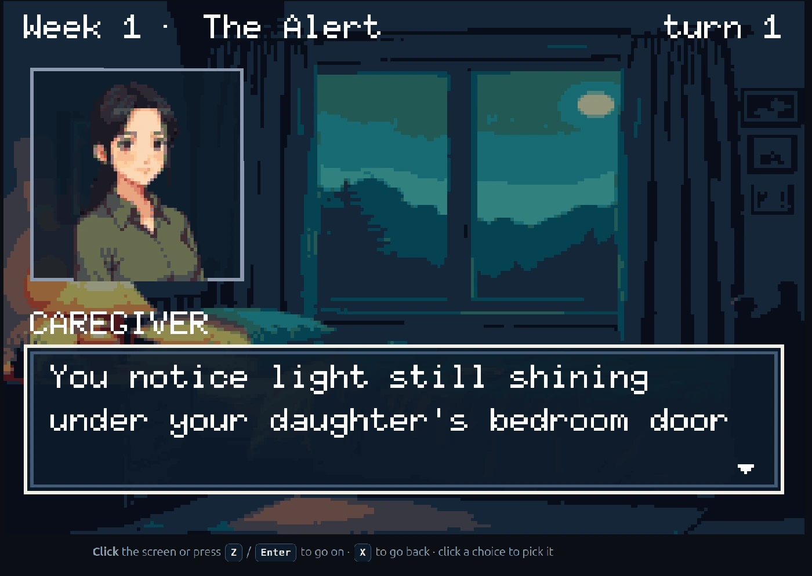
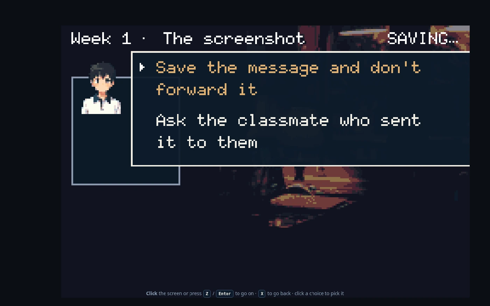
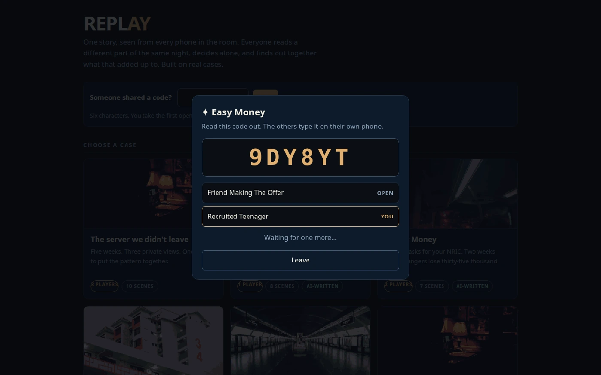
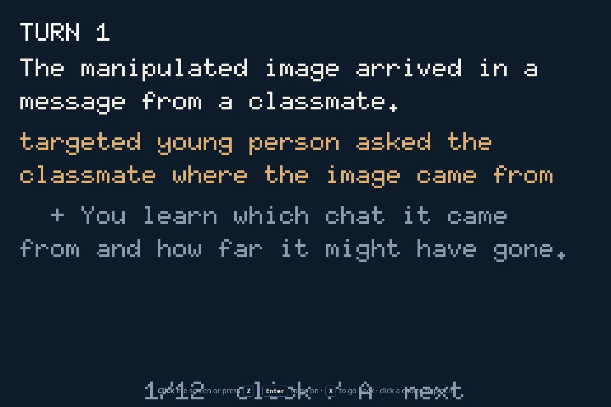
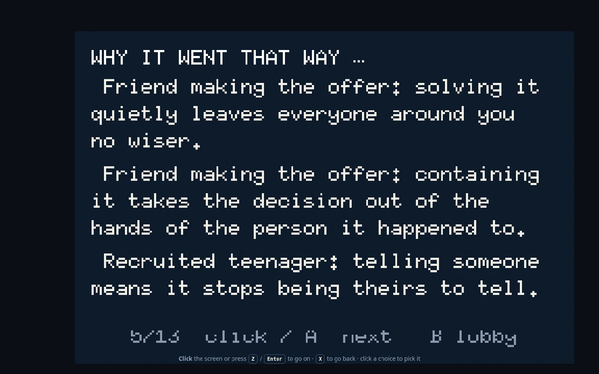

240 × 160 · MULTIPLAYER · NO INSTALL
REPLAY
A cooperative family scenario game about online harm, where every player is deliberately given a different, incomplete view of the same incident — and the credits turn what they missed into a conversation.

WEEK 1·THE PROBLEM
turn 1
Everyone sees a
different fragment.
Replay keeps the information gap instead of closing it. Each role receives only what that person could realistically know, and chooses privately. The awkwardness of the real conversation is the mechanic, not a bug to design away.
There is no score and no correct answer. Both choices carry costs. The learning is in comparing perspectives afterwards.
WEEK 2·THE DESIGN
turn 2
Six steps, one room code.
No account, no install, no app store. A host opens a room; everyone else joins from their own browser with six characters.
- 01 · HostPick a source-grounded local case, or ask the AI authoring lane for a fresh one.
- 02 · JoinPlayers enter a six-character code from their own device and take distinct roles.
- 03 · KnowEach role is dealt only the information that person could realistically hold.
- 04 · ChooseEveryone decides privately. Nobody can outvote the young person the incident targets.
- 05 · ResolveDeterministic code combines the decisions and plays out the consequence.
- 06 · DebriefThe credits reveal the real case, what each role missed, and genuine help routes.

WEEK 3·THE MACHINE
turn 3
Seven layers.
Facts flow up only.
The generative part authors stories; it never authors truth. Evidence sits at the bottom, source-locked and PII-scrubbed, and every layer above may only read downward. The engine is deterministic Python with no I/O at all, which is what makes 32,768 paths checkable rather than merely testable.
L2 never reads L3 · L4 never computes truth
SCREENS·THE BUILD
live
Running, not mocked.
Every frame below is the working browser prototype.



WEEK 4·THE JOURNEY
turn 4
What the build actually cost.
- The three-player assumption "Three players" was never engine law. N is whatever roles the scenario file declares — any literal 3 outside a scenario is a bug, and several were.
- Private state, honestly Per-role point-of-view had to hold under reconnects and refreshes. Live tests across one to four seats found zero cross-role leaks.
- The gate earned its keep The AI lane produced a genuinely good-looking scenario that had no real branching. The gate refused it. Keeping that refusal visible was worth more than a cleaner reel.
- Handover Built inside an agent fleet, then handed over with the engine and server frozen at working and the client slated for teardown.
DIRECTORY·SEE IT
end